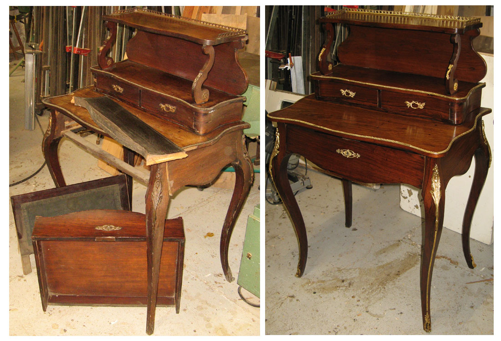
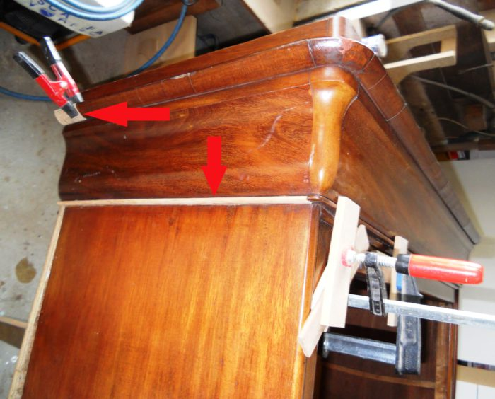
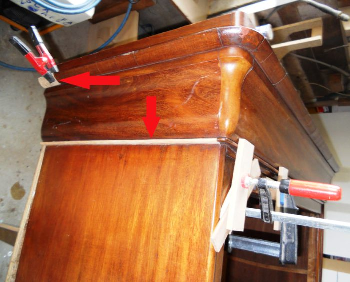
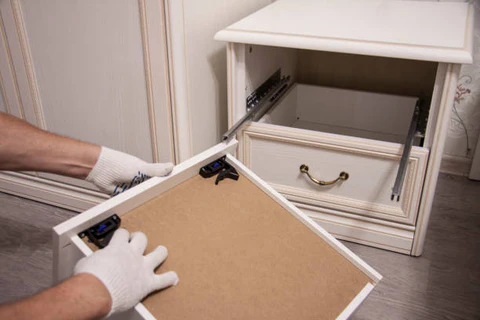

reparation de meubles anciens
restauration total d'une commode
reparation d'un armore abimé
Chez ArtiBois, nous redonnons vie à vos meubles anciens.
Nous privilégions des techniques traditionnelles et des produits écologiques durable et respectueux de l’environnement.
Chez ArtiBois, nous redonnons vie à vos meubles en bois, qu’ils soient anciens ou contemporains.
Table rayée, chaise cassée, armoire ternie ? >> Nos artisans réparent, poncent et rénovent chaque pièce avec soin et précision.
restauration total d'une commode
reparation d'un armore abimé
refixation des charnières
réparation tiroir